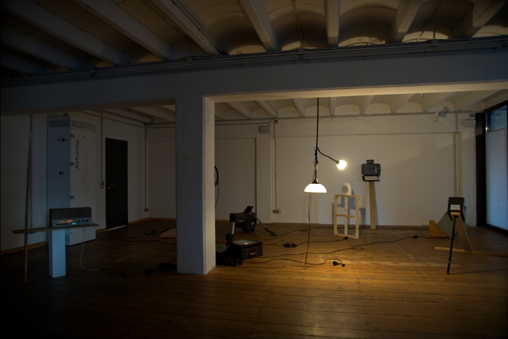
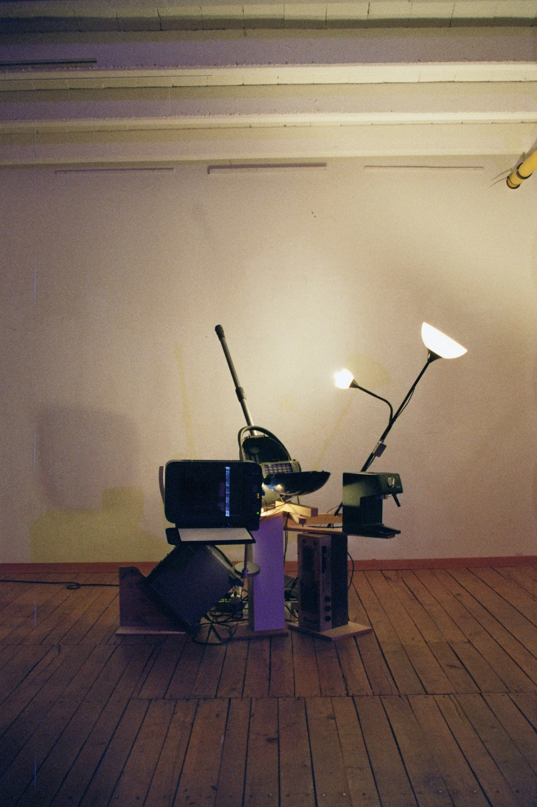
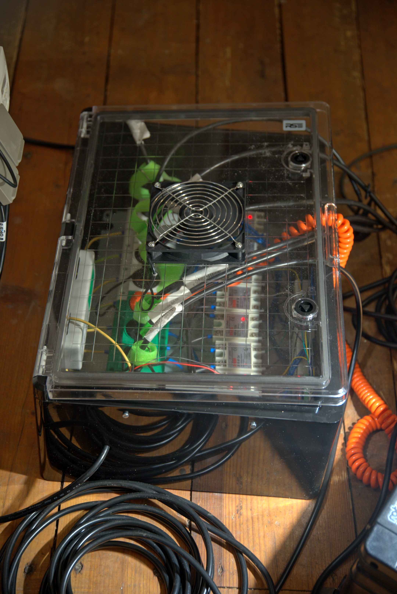
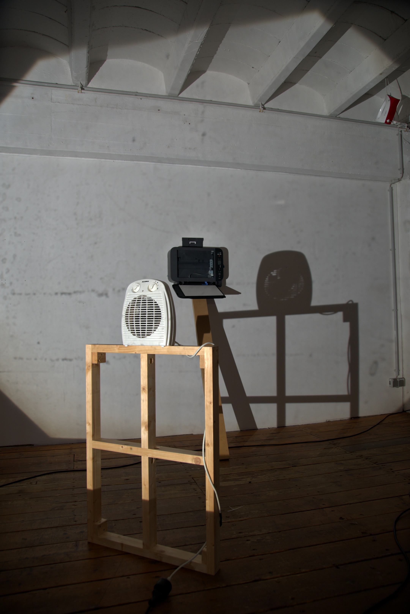
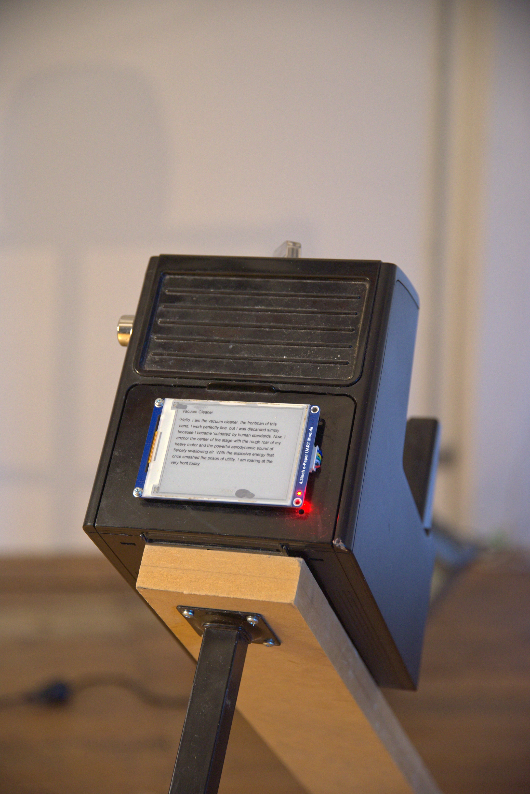

Die Bremer Stadtmusikanten(self-portrait)
I collected discarded appliances to create a sound sculputre. Each appliance is designed to respond to the sounds or movements of the others.
2026
Microcontroller
<Just Another Intelligence(WIP)>, Bremen(Germany), 2026
Hochschulpreis Digitale Medien, 1. Prize - 2026
Die Bremer Stadtmusikanten: Self-Portrait is a sound sculpture
ensemble composed of discarded household appliances, functioning as
a real-time interactive system. Arduino Nano and SSR Relay modules were used.
You can find more detailed description about works on here






